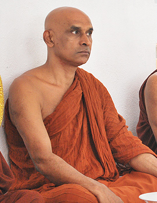

Bhante Dhammajiva

Bhante Dhammajiva Mahá Théro (Dhammajiva čteme jako „Dhammadžíva“) je čtvrtým opatem velmi známého srílanského kláštera Mitirigala Nissarana Vanaya. Zároveň je v tomto klášteře hlavním preceptorem (mnichem, který je zodpovědný za mnišskou ordinaci těch, kteří se rozhodnou stát se mnichy). Bhante je velmi respektovaný pro svoji znalost mnoha různých meditačních technik, a to jak těch samathových, tak barmských vipassanových technik.
Duchovní hledání bhante Dhammajivy začalo v době, kdy ještě studoval na Peradeniya univerzitě v Kandy. V roce 1977, ještě v průběhu jeho studií, onemocněl jeho otec a bhante se o něj nějakou dobu staral.
Následná smrt jeho otce v něm zanechala silné přání zkoumat pomíjivou a neuspokojivou povahu života a silné přání opustit světský život. V listopadu 1988 ordinoval jako buddhistický mnich a přijal duchovní jméno „Dhammajiva“.
V letech 1988 až 1992 podstoupil intenzivní trénink pod vedením bhante Mātara Sri Ñānārāma. Poté, co v roce 1993 zemřel jeho učitel, odcestoval bhante Dhammajiva do Barmy, kde v letech 1993-1996 podstoupil další meditační výcvik pod vedením barmského mnicha Saydaw U Panditabhivamsa.
V Barmě se bhante Dhammajiva naučil čtvrtý jazyk a díky tomu byl později schopný přeložit některé těžší texty velmi respektovaných barmských mnichů Mahási Sayadaw a Pa Auk Sayadaw. V roce 2005 byl oficiálním tlumočníkem Pa Auk Sayadaw na Srí Lance.
Poté, co úspěšně dokončil svůj výcvik v Barmě, odcestoval bhante Dhammajiva na Srí Lanku na požádání mnišské komunity kláštera Nissarana Vanaya. Tam o samotě pokračoval ve svém meditační praxi mezi lety 1996 až 2006. V této době také studoval Páli, Vinaju a Abhidhammu.
Jeho práce v osamění přinesla ovoce v podobě téměř čtyřiceti publikací o buddhistické meditační praxi. Jedná se jak o publikace autorské, tak i o překlady barmských meditačních manuálů do sinhálštiny a do angličtiny.
V roce 2016 založil bhante Dhammajiva organizaci Sati Pasala (www.satipasala.org), jejíž cílem je propagovat praxi všímavosti ve školách a v profesních organizacích.
Příspěvek bhanteho Dhammajivy pro zachování Buddhova učení pro budoucí generace pokračuje. Na pozvání různých buddhistických skupin každý rok vede meditační kurzy v Austrálii, Kanadě, na Novém zélandu, ve Velké británii, USA, Německu, Singapuru a na Slovensku, kam ho pravidelně zve Meditační centrum Javorie.
Přednášky Bhante Dhammajivy jsou k dispozici na YouTube kanálu Centrum Javorie.